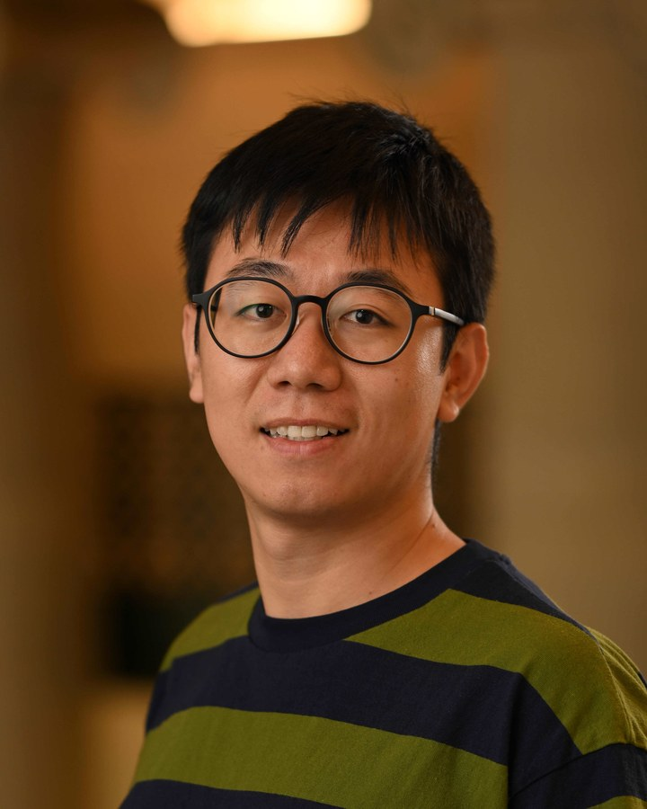
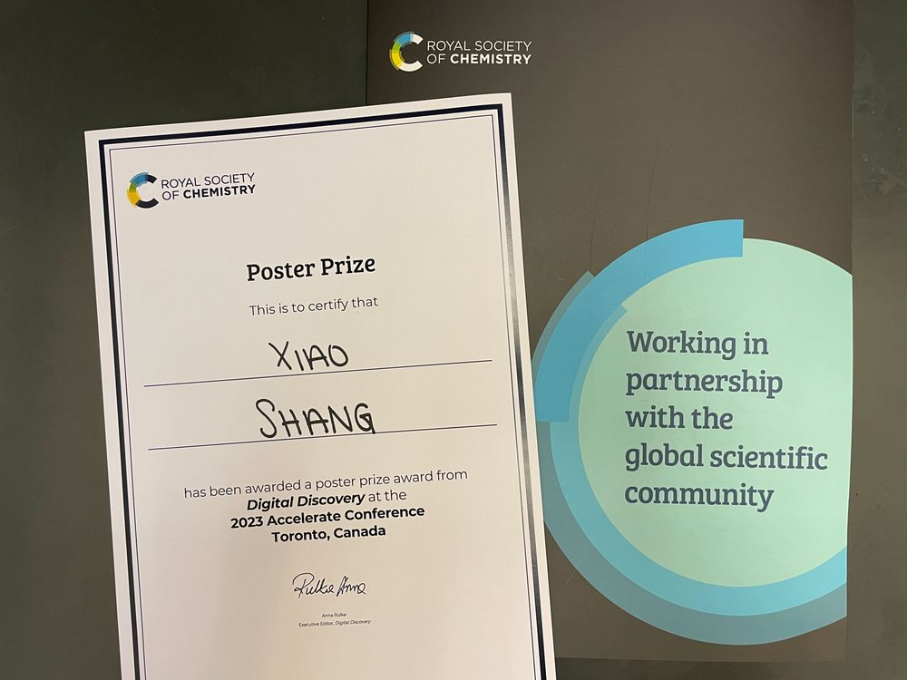

Postdoctoral Researcher at MIT. Licensed Professional Engineer. Canadian citizen.

I am a postdoctoral researcher at the Massachusetts Institute of Technology, working with Prof. A. John Hart in the Mechanosynthesis Group (Department of Mechanical Engineering) and Prof. Zachary Cordero in the Gas Turbine Laboratory (Department of Aeronautics and Astronautics), supported by an NSERC Canada Postdoctoral Research Award. At MIT I am characterizing the manufacture of functionally graded gas-turbine blisks and planning their toolpaths under the DARPA METALS program, and developing a hybrid laser powder bed fusion + inkjet process for functionally graded materials. My research aims to remove the manufacturing bottleneck in AI-driven design, so that the materials and parts AI designs can be built accurately, quickly and affordably.
I received my PhD in Materials Science and Engineering from the University of Toronto in 2026 under Prof. Yu Zou, as an NSERC CGS D scholar. My thesis built a custom multi-material directed energy deposition platform, developed machine-learning methods for inverse process optimization and closed-loop control, and designed heterostructured and multifunctional metals. I was a visiting scholar with Prof. Peter D. Lee at University College London, where I studied magnetic-field-assisted DED with in-situ synchrotron X-ray imaging.
Before my PhD I was a mechanical engineer at the Brunner Neutrino Lab at McGill University, supporting nuclear physics experiments, and earned an MSc in Mechanical Engineering at McGill with Prof. Damiano Pasini on durable bistable auxetic metamaterials (US Patent 10,767,032). I hold a BEng in Mechanical Engineering from South China University of Technology.
Mechanosynthesis Group (MechE) & Gas Turbine Laboratory (AeroAstro). Supervisors: Profs. A. John Hart and Zachary Cordero.
University of Toronto. Supervisor: Prof. Yu Zou. GPA 4.0/4.0.
MSM@Harwell Group. Supervisor: Prof. Peter D. Lee. In-situ synchrotron X-ray imaging of magnetic-field-assisted DED.
Brunner Neutrino Lab, Department of Physics. Engineering support for nuclear physics experiments.
McGill University. Supervisor: Prof. Damiano Pasini. GPA 4.0/4.0.
University of Calgary. Supervisor: Prof. Simon Park.
South China University of Technology. GPA 3.8/4.0.
NSERC Canada Postdoctoral Research Award (CPRA), national — $140,000
DND/NSERC Supplemental Funding Award, national — $10,000
Connaught Innovation Award, University of Toronto — $150,000, with Prof. Yu Zou (autonomous additive manufacturing system)
NSERC Canada Graduate Scholarship – Doctoral (CGS D), national — $120,000
NSERC Michael Smith Foreign Study Supplement, national — $6,000
Mitacs Globalink Research Award, international — $6,000
Ontario Graduate Scholarship (twice), provincial — $30,000
Mitacs Globalink Graduate Fellowship, international — $15,000
Mitacs Globalink Research Internship, international — $7,500
2027 AIME Henry DeWitt Smith Scholarship, presented at the TMS 2027 Annual Meeting — US$2,500, plus a US$500 travel grant and complimentary TMS registration
1st Place, ASM International IMAT Materials Venture Challenge — US$5,000
Joseph R. Benedetto Scholarship, SME Toronto Chapter 26 — $1,000
Poster Prize from Digital Discovery (Royal Society of Chemistry), Accelerate 2023 Conference, Acceleration Consortium
Chinese National Encouragement Scholarship (top 2%)
Chinese National Scholarship (top 1%)

Small projects I build for fun, usually with a 3D printer nearby.